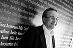

Företagsledare - VD Robert Nils Einar Lindberg
Musiker/gitarr i Context och 0914, företag/Musik & Nöjen Västerbotten.
| Född: | 1967-02-05 Bygdeträsk, Burträsk fs, Burträsk kn. [1] | |
|---|
| Levde: | 1981 Bygdeträsk 5:15, Bygdeträsk 216, Burträsk fs, Skellefteå kn. [2] | |
|---|
| Levde: | 1991 Gammelbyn 14:19, Skolg 33 C, Burträsk, Burträsk fs, Skellefteå kn. [3] | |
|---|
| Levde Gift: | 2012 Burträsk, Burträsk fs, Skellefteå kn. | Med maka och två barn. |
|---|
Noteringar
VD för Skellefteå Airport, styrelseproffs och uppskattad föreläsare inom ämnen som Medarbetarskap och Företagskreativitet.
Robert Lindberg har många strängar på sin lyra. Jag rekommenderar dig att besöka hans webbplats och även ta del av hans CV. Robert har också en Facebooklogg. Robert Lindberg är gift och har två barn.
Länkar:
www.robertlindberg.com/recension.asp
www.facebook.com/#!/robert.lindberg
www.allabolag.se/670205SNLF/verksamhet
Personhistoria
| Årtal | Ålder | Händelse |
|---|
| 1967 |
|
Födelse 1967-02-05 Bygdeträsk, Burträsk fs, Burträsk kn [1] |
| 1981 |
|
Levde 1981 Bygdeträsk 5:15, Bygdeträsk 216, Burträsk fs, Skellefteå kn [2] |
| 1991 |
|
Levde 1991 Gammelbyn 14:19, Skolg 33 C, Burträsk, Burträsk fs, Skellefteå kn [3] |
| 2007 |
40 år |
Fadern Nils Arne Lindberg dör 2007-03-10 Burträsk, Burträsk fs, Skellefteå kn [4] |
| 2011 |
43 år |
Modern Ebba Kerstin Maria Nilsson dör 2011-01-07 Burträsk, Burträsk fs, Skellefteå kn [5] |
| 2012 |
|
Levde Gift 2012 Burträsk, Burträsk fs, Skellefteå kn |
Dokument
Källor
| [1] | Mtl Västerbottens län 1971 |
| |
| | |
| [2] | Mtl Västerbottens län 1981 |
| |
| | |
| [3] | Mantalslängd 1991, Västerbottens län |
| |
| | |
| [4] | FK 09 / man91 |
| |
| | |
| [5] | NV - Dödsannonsregistrering 2011-01-22, http://norran.se/2011/01/arkivet/kerstinlindberg/ |
| |
|
|  |
2012. Robert Lindberg,
VD Skellefteå Airport AB.
Musiker/gitarr i grupperna Context och 0914.
Egenföretagare: Musik & Nöjen Västerbotten.
Styrelseproffs
Föreläsare - Medarbetarskap och Företagskreativitet
|
|
{kind=link}